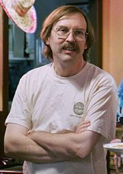

Nosotros, los programadores
"La mayoría de ustedes están familiarizados con las virtudes del programador. Son tres, por supuesto: pereza, impaciencia y orgullo desmedido"-- Larry Wall
De las tres, la pereza es la más importante. Nos impulsa a resolver problemas. Muchas veces me encuentro escribiendo programas con el objetivo de evitar hacer tareas repetitivas, difíciles de hacer "a mano" o aburridas.
Larry Wall (nacido el 27 de septiembre de 1954) es un programador, lingüista y autor, más conocido por haber creado el lenguaje de programación Perl en 1987.
{kind=link}
Wall es el autor del programa rn (lector de artículos de Usenet) y del casi universal patch. Ha ganado el IOCCC (concurso internacional de código C ofuscado) dos veces y recibió el primer premio de la Free Software Foundation para el avance del software libre en 1998.
Más allá de sus habilidades técnicas, Wall es conocido por su irónico sentido del humor, que manifiesta en sus comentarios en el código fuente o en Usenet. Por ejemplo (traducción libre): "No me gusta hacer cosas estúpidas, excepto si son a propósito".
Fuente: Wikipedia
Este post es parte de Citas sobre programación.
Comentarios
Comments powered by Disqus